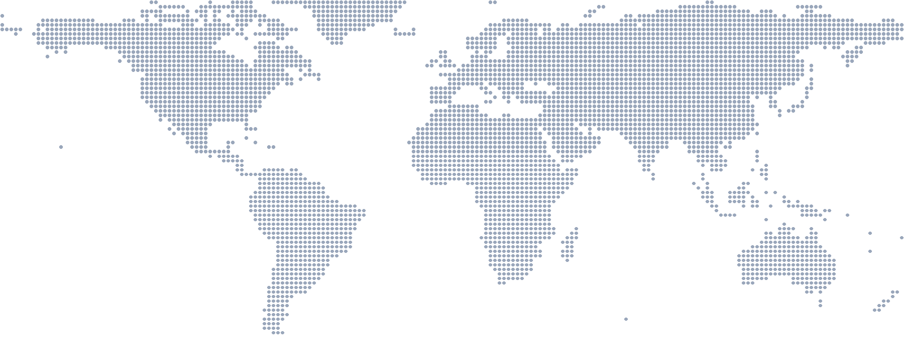
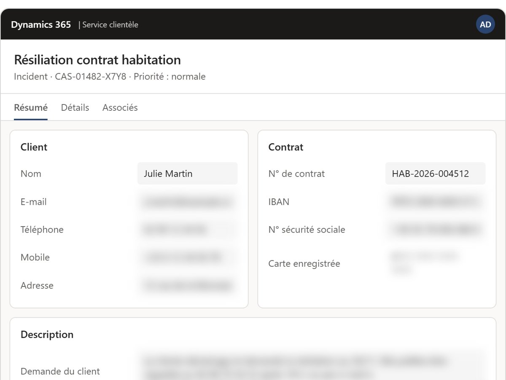
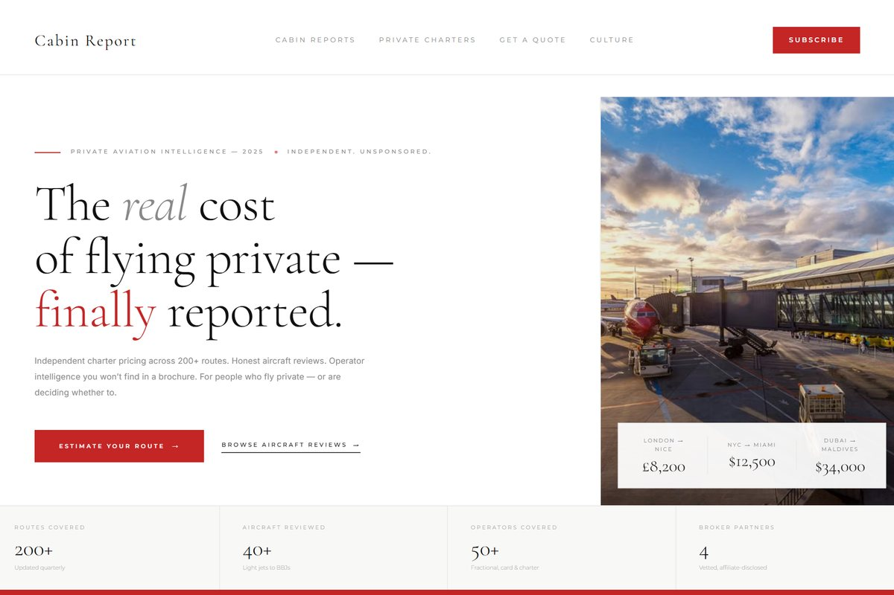

Microsoft Power Platform · Dynamics 365 · AzureMicrosoft Power Platform · Dynamics 365 · Azure
Carlos San Luis
Power Platform & Dynamics 365 Solution Architect. I design, secure and build the Microsoft business platform: Dataverse, Power Apps, Power Automate, C# plug-ins and Custom APIs on Azure. Fifteen years across development and international customer service.
Architecte solutions Power Platform & Dynamics 365. Je conçois, sécurise et développe la plateforme métier Microsoft : Dataverse, Power Apps, Power Automate, plug-ins C# et Custom APIs sur Azure. Quinze ans d'expérience entre le développement et le service client international.
Based near Rennes, Brittany · French, EnglishBasé près de Rennes (35) · Français, anglais
Video introductionPrésentation en vidéo
€60kannual savings from licence and Dataverse storage optimisationd'économies annuelles (licences et stockage Dataverse)
5international entities on one Power Platform governance frameworkentités internationales sous un même cadre de gouvernance
1 170+tickets handled: 737 in support, 440+ changes and fixestickets traités : 737 en support, 440+ évolutions et correctifs
15 yrsansin development and the service industryen développement et dans le service client
Working across bordersUne collaboration internationale
Where the teams, partners and vendors I have worked with are based.Les pays et villes des équipes, partenaires et prestataires avec qui j'ai travaillé.

DelhiDelhi
MontrealMontréal
Hyderabad (Pakistan)Hyderabad (Pakistan)
RomaniaRoumanie
Hong KongHong Kong
TaiwanTaïwan
ManilaManille
CebuCebu
South AfricaAfrique du Sud
DubaiDubaï
FranceFrance
SpainEspagne
ItalyItalie
AustraliaAustralie
JapanJapon
ChicagoChicago
TexasTexas
OregonOregon
ShenzhenShenzhen
ShanghaiShanghai
CarentoirCarentoir
AmsterdamAmsterdam
BrusselsBruxelles
Selected projectsProjets choisis
Case studiesÉtudes de cas
Work for an international consumer-electronics group with five entities. Client details are left out.
Réalisations pour un groupe international d'électronique grand public (cinq entités). Les détails du client ne sont pas mentionnés.
IntegrationIntégrationBeforeAvantA vendor's gatewayPasserelle d'un prestataire↓AfterAprèsAbout 15 in-house Custom APIsUne quinzaine de Custom APIs internes
SecuritySécuritéBeforeAvantInternal audit: "weak" · MD5 passwordsAudit interne : « faible » · mots de passe MD5↓AfterAprèsBCrypt · least privilege · secrets in Key VaultBCrypt · moindre privilège · secrets dans Key Vault
GovernanceGouvernanceBeforeAvantVendors with no shared rulesPrestataires sans règles communes↓AfterAprèsOne charter and one ALM pipeline for 5 entitiesUne charte et une chaîne ALM pour 5 entités
CostsCoûtsBeforeAvantLicences and storage not optimisedLicences et stockage non optimisés↓AfterAprès€60k saved per year60 k€ économisés par an
An in-house API layer on DataverseUne couche d'API interne sur Dataverse
Architecture · C# · Azure
The group's websites, e-shops and desktop software all reached the CRM through a third-party gateway. I designed its replacement: Dataverse Custom APIs, owned in-house and published behind Azure API Management.
Les sites, e-shops et logiciels du groupe accédaient au CRM via une passerelle tierce. J'ai conçu son remplacement : des Custom APIs Dataverse, maîtrisées en interne et publiées derrière Azure API Management.
About 15 Custom APIs covering contacts, sign-in, cases, notes and documents, orders, newsletters and wishlists.
Separate C# plug-in assemblies for websites and for software, so each can be deployed on its own.
No secrets in code or configuration. Legacy keys sit in Azure Key Vault, read through Managed Identity.
Observability: logging through ILogger, a correlation ID between API Management and Dataverse, and INFO / WARN / ERR error codes.
Une quinzaine de Custom APIs : contacts, connexion, incidents, notes et documents, commandes, newsletters, listes de souhaits.
Des assemblies de plug-ins C# séparées pour les sites et pour les logiciels, déployables indépendamment.
Aucun secret dans le code ni la configuration. Les clés historiques sont dans Azure Key Vault, lues via Managed Identity.
Observabilité : journalisation ILogger, identifiant de corrélation entre API Management et Dataverse, codes d'erreur INFO / WARN / ERR.
The integration contract is now owned in-house. Vendor dependency is gone, and every call can be traced from the website to the CRM record.
Le contrat d'intégration est maîtrisé en interne. La dépendance au prestataire disparaît, et chaque appel est traçable du site jusqu'à l'enregistrement CRM.
Every client goes through one gateway. Secrets and telemetry never sit in code.
Tous les clients passent par une seule passerelle. Secrets et télémétrie restent hors du code.
Connecting e-commerce to Dynamics 365Relier l'e-commerce à Dynamics 365
Development · Integration · Sales
I connected the e-shops to the CRM: orders, shipments, credit notes and invoices flow automatically, and wishlists and abandoned carts become sales opportunities in Dynamics 365 Sales. Grafana dashboards monitor the interfaces.
J'ai relié les e-shops au CRM : commandes, expéditions, avoirs et factures remontent automatiquement, et les listes de souhaits et paniers abandonnés deviennent des opportunités dans Dynamics 365 Sales. Des tableaux Grafana surveillent les interfaces.
CRM security and administrationSécurité et administration du CRM
Security · Entra ID · Power Platform
An internal audit rated the CRM's security posture "low". I led the remediation, from how passwords are stored up to tenant-wide settings, and I now own CRM security, role management and administration.
Un audit interne avait jugé « faible » le niveau de sécurité du CRM. J'ai piloté la remédiation, du stockage des mots de passe jusqu'aux paramètres du tenant, et je suis désormais responsable de la sécurité du CRM, de la gestion des rôles et de l'administration.
Passwords moved from MD5/Base64 to BCrypt. Customers keep signing in during the migration, and the legacy keys sit in Key Vault.
Column-level security on the seven authentication columns. Anything that could expose secrets in trace logs was removed.
Unauthenticated HTTP-triggered flows taken out of production. Each website now has its own application account.
Mots de passe migrés de MD5/Base64 vers BCrypt. Les clients restent connectés pendant la migration, et les clés historiques sont dans Key Vault.
Sécurité au niveau colonne sur les sept colonnes d'authentification. Tout ce qui pouvait exposer des secrets dans les journaux a été supprimé.
Flux HTTP non authentifiés retirés de la production. Chaque site dispose désormais de son propre compte applicatif.
Least-privilege roles for agents, managers, developers and service accounts, replacing System Administrator. Roles are kept in sync with Entra ID security groups.
Tenant hardening: tenant isolation, IP firewall and cookie binding, guest restrictions, Customer Lockbox, Global Secure Access and auditing in production.
Tenant security score and settings: I track the score and adjust tenant-level settings to raise it.
Rôles au moindre privilège pour les agents, managers, développeurs et comptes de service, à la place d'Administrateur système. Les rôles sont synchronisés avec les groupes Entra ID.
Durcissement du tenant : isolation, pare-feu IP et liaison de cookies, restrictions invités, Customer Lockbox, Global Secure Access, audit en production.
Score et paramètres de sécurité du tenant : je suis le score et j'ajuste les paramètres du tenant pour le faire progresser.
On the company's ISO 27001 certification project, no critical issues remained two weeks after I joined. The first phase is complete.
Sur le projet de certification ISO 27001 de l'entreprise, il ne restait plus aucun point critique deux semaines après mon arrivée. La première phase est terminée.
Power Automate automations: e-mails, contracts and spare-part ordersAutomatisations Power Automate : e-mails, contrats et commandes de pièces
Low-code · Power Automate · Dataverse · ERP
Automated Power Automate flows take repetitive work off customer service, marketing and after-sales teams, from Dataverse all the way to the on-premises ERP.
Des flux Power Automate automatisés retirent les tâches répétitives au service client, au marketing et au SAV, depuis Dataverse jusqu'à l'ERP sur site.
E-mails triggered by Dataverse: when a record is created or updated, the right e-mail goes out with no manual step.
Marketing contracts after the e-shop journey: once the customer completes the e-shop process, the contract is sent automatically.
After-sales spare-part orders: when an after-sales case needs a part, the flow creates the order automatically in the on-premises ERP, through the on-premises data gateway.
Excel data merges: flows read Excel files and merge their data into Dataverse.
E-mails déclenchés par Dataverse : à la création ou à la mise à jour d'un enregistrement, le bon e-mail part sans action manuelle.
Contrats marketing après le parcours e-shop : une fois le parcours terminé par le client, le contrat est envoyé automatiquement.
Commandes de pièces détachées pour le SAV : quand un dossier SAV nécessite une pièce, le flux crée automatiquement la commande dans l'ERP sur site, via la passerelle de données locale.
Fusion de données Excel : des flux lisent des fichiers Excel et fusionnent leurs données dans Dataverse.
Cloud flows reach the on-premises ERP through the data gateway; nothing is opened to the internet.
Les flux cloud atteignent l'ERP sur site via la passerelle de données, sans rien ouvrir sur Internet.
AI agents and omnichannel customer serviceAgents IA et service client omnicanal
AI agents · Copilot · Dynamics 365 Customer Service
Support agents in several countries handle email, chat, phone and review platforms. I brought those channels into one Customer Service Workspace and deployed AI agents: Ariann at the front of the customer chat, and Copilot for the internal teams.
Des agents de support dans plusieurs pays traitent e-mails, chat, téléphone et plateformes d'avis. J'ai réuni ces canaux dans un Customer Service Workspace et déployé des agents IA : Ariann en première ligne du chat client, et Copilot pour les équipes internes.
Live chat on several support sites and e-shops, with skills-based routing by language.
Cloud telephony integrated in the agent workspace: calls logged and owners assigned automatically.
Queues and routing rules for review platforms, marketplace support and a privacy (GDPR) mailbox.
Chat en direct sur plusieurs sites de support et e-shops, avec routage par compétence linguistique.
Téléphonie cloud intégrée à l'espace agent : appels enregistrés et propriétaires attribués automatiquement.
Files d'attente et règles de routage pour les plateformes d'avis, le support marketplace et une boîte RGPD.
The Ariann AI assistant answers first, shows a typing indicator, and hands over to a human agent through Live Assist when needed.
Copilot internally: rolled out to the teams.
Protection against bot traffic, multilingual answers, and chat history deleted when the session ends.
L'assistant IA Ariann répond en premier, affiche un indicateur de saisie et transfère à un conseiller via Live Assist si besoin.
Copilot en interne : déploiement auprès des équipes.
Protection contre les robots, réponses multilingues, historique effacé en fin de session.
For customers, Ariann answers first and hands over to an agent through Live Assist. Internally, Copilot supports the teams.
Côté clients, Ariann répond en premier et passe la main à un conseiller via Live Assist. En interne, Copilot accompagne les équipes.
ALM and governance for five entitiesALM et gouvernance pour cinq entités
ALM · Azure DevOps · Governance
Several partners were changing the same environments with no shared rules. I rebuilt how solutions move to production and co-wrote the development charter all five entities follow.
Plusieurs prestataires modifiaient les mêmes environnements sans règles communes. J'ai refondu le passage en production des solutions et co-rédigé la charte de développement suivie par les cinq entités.
DEVUnmanaged solutions · partner work isolatedSolutions non gérées · travail des prestataires isolé
→
TESTRECETTEManaged import · user acceptance · release checklistImport géré · recette métier · checklist de livraison
→
PRODManaged only · no unmanaged layers · alertingGéré uniquement · aucune couche non gérée · alertes
Azure DevOps pipelines load environment variables and connection references for each environment
Les pipelines Azure DevOps chargent les variables d'environnement et références de connexion propres à chaque environnement
A 12-step clean-up of solution layers brought the three environments back in line.
Written procedures for every release: solutions, flows and plug-ins.
A hub-and-spoke model lets internal and partner developers work in parallel.
I review partner deliveries for code quality and for cost against value.
Un nettoyage en 12 étapes des couches de solutions a réaligné les trois environnements.
Des procédures écrites pour chaque livraison : solutions, flux et plug-ins.
Un modèle hub-and-spoke permet aux développeurs internes et prestataires de travailler en parallèle.
Je revois les livrables des prestataires : qualité du code et rapport coût/valeur.
€60k a year saved on licences and storage60 k€ d'économies annuelles sur les licences et le stockage
FinOps · Dataverse · Power Automate
I audited how licences were assigned and how storage was used across the group. Then I automated the clean-up so the savings would last.
J'ai audité l'attribution des licences et l'usage du stockage dans tout le groupe, puis automatisé le nettoyage pour que les économies durent.
Licences matched to real use. Team Member licences went to light users, and Premium licences to non-interactive service accounts.
Scheduled retention jobs for attachments, emails, closed cases and system jobs, plus capacity monitoring of the audit and trace logs.
Des licences ajustées à l'usage réel. Licences Team Member pour les utilisateurs légers, Premium pour les comptes de service non interactifs.
Des purges planifiées des pièces jointes, e-mails, incidents clôturés et tâches système, avec suivi de la capacité des journaux d'audit et de trace.
Duplicate and orphan contacts cleaned up. Every new contact now records where it came from.
Failure alerts on flows, mailboxes and queue rules, so problems surface before users report them.
Contacts en doublon ou orphelins nettoyés. Chaque nouveau contact enregistre désormais sa provenance.
Alertes en cas d'échec sur les flux, boîtes mail et règles de files d'attente, avant que les utilisateurs ne remontent le problème.
CareerParcours
ExperienceExpérience
2023 – presentaujourd'hui
Web & CRM Developer · Dynamics 365 Solution ArchitectDéveloppeur Web & CRM · Architecte solutions Dynamics 365
International consumer-electronics group (5 entities) · BrittanyGroupe international d'électronique grand public (5 entités) · Bretagne
Technical lead for the group's Microsoft business platform: architecture, security, C# development, ALM, licence management and oversight of external vendors.
Référent technique de la plateforme métier Microsoft du groupe : architecture, sécurité, développement C#, ALM, gestion des licences et pilotage des prestataires.
2021
Technical Support, International ClientsSupport technique clients internationaux
Same group, logistics entityMême groupe, entité logistique
Handled priority cases and priority products in English and French on Dynamics CRM and a custom ERP. Consistently among the top performers.
Traitement des dossiers et produits prioritaires en français et en anglais, sur Dynamics CRM et un ERP sur mesure. Régulièrement parmi les meilleurs résultats.
International insurance & assistance group · FranceGroupe international d'assurance et d'assistance · France
Built and launched an insurance information website, hosted on AWS (Lightsail, S3, CloudFront, CLI).
Création et mise en ligne d'un site d'information sur l'assurance, hébergé sur AWS (Lightsail, S3, CloudFront, CLI).
2019 – 2020
Assistant Systems Administrator (internship)Assistant administrateur systèmes (stage)
Private school · BrittanyÉtablissement scolaire privé · Bretagne
Supported the systems administrator and the director with IT governance and day-to-day operations.
Appui à l'administrateur systèmes et à la direction sur la gouvernance et l'exploitation informatique.
2015 – 2018
Web & Marketing Manager (part-time)Responsable web & marketing (temps partiel)
Printing company · Dubai, UAEImprimerie · Dubaï, Émirats arabes unis
Built an Android app and WordPress websites, ran SEO, and managed outsourced talent.
Création d'une application Android et de sites WordPress, SEO, pilotage de prestataires.
2007 – 2017
First Class Flight Steward · Cabin SupervisorSteward première classe · Chef de cabine
International airline · Dubai, UAECompagnie aérienne internationale · Dubaï, Émirats arabes unis
Ten years of premium international customer service. Led multicultural crews and handled safety-critical situations.
Dix ans de service client international haut de gamme. Encadrement d'équipages multiculturels et gestion de situations critiques pour la sécurité.
EarlierAuparavant
Life Insurance Sales AgentConseiller commercial en assurance vie
Life insurance company · PhilippinesCompagnie d'assurance vie · Philippines
Lead generation, needs discovery, risk analysis, presentation and closing.
Prospection, découverte des besoins, analyse des risques, présentation et conclusion.
Personal project · Browser extensionProjet personnel · Extension navigateur
Discret: no personal data on a shared screenDiscret : aucune donnée personnelle sur un écran partagé
CRM users share their screen all day: Teams calls, trainings, demos, bug reports. Discret blurs e-mails, phone numbers, IBANs, card numbers and social security numbers with one shortcut, and copies any value in one click without showing it. Built for Dynamics 365, it works on any web app.
Les utilisateurs d'un CRM partagent leur écran toute la journée : réunions Teams, formations, démos, signalements de bugs. Discret floute e-mails, téléphones, IBAN, cartes bancaires et numéros de sécurité sociale d'un raccourci, et copie n'importe quelle valeur en un clic sans l'afficher. Conçue pour Dynamics 365, elle fonctionne sur toute application web.
Prototype v0.1

What it doesFonctionnalités
Alt + Shift + M blurs every personal value on the page: fields, grids, notes and free text. Tooltips are hidden too.
One-click copy: a ⧉ button on each field, or Alt + click. It works while masked.
Right-click any field to always mask it on that site.
Alt + Maj + M floute toutes les valeurs personnelles de la page : champs, grilles, notes et textes libres. Les infobulles sont masquées aussi.
Copie en un clic : un bouton ⧉ sur chaque champ, ou Alt + clic. Fonctionne même masqué.
Clic droit sur un champ pour toujours le masquer sur ce site.
How it is builtConstruction
Reliable detectionDétection fiable
IBAN checksum, Luhn check for cards, key check for social security numbers, and known Dynamics fields by name. Unit-tested against false positives such as case numbers, GUIDs and dates.
Clé de contrôle IBAN, algorithme de Luhn pour les cartes, clé des numéros de sécurité sociale, et champs Dynamics connus par leur nom. Tests unitaires contre les faux positifs : numéros d'incident, GUID, dates.
Privacy by designConfidentialité dès la conception
Nothing leaves the browser: no server, no analytics. Copied values stay in memory only. Other sites need the user's explicit approval.
Rien ne quitte le navigateur : pas de serveur, pas de mesure d'audience. Les valeurs copiées restent en mémoire. Tout autre site demande l'accord explicite de l'utilisateur.
JavaScriptManifest V3Edge / ChromeDynamics 365FR / EN
The zip includes a README with installation steps for Edge and Chrome.
Le zip contient un README avec les étapes d'installation pour Edge et Chrome.
Demo projectProjet de démonstration
AssurDemo: an insurance customer portal on Power PlatformAssurDemo : un portail client d'assurance sur la Power Platform
A fictional insurer's portal, built end to end in my own Microsoft tenant. It combines a Copilot Studio assistant, secure sign-in, quotes, claims with AI photo analysis, and PDF form reading with advisor approval. Each module has its own build plan.
Le portail d'un assureur fictif, construit de bout en bout dans mon propre tenant Microsoft. Il combine un assistant Copilot Studio, une connexion sécurisée, des devis, des sinistres avec analyse IA des photos, et la lecture de formulaires PDF validée par un conseiller. Chaque module a son plan de réalisation.
Personal project · Health techProjet personnel · Santé
Cynth-ia: from X-ray findings to a rehab plan the clinician signsCynth-ia : du compte rendu radio au plan de rééducation signé par le soignant
An AI wrapper for healthcare providers. Cynth-ia reads X-ray and MRI findings and drafts a personalised rehabilitation plan with exercises, restrictions, duration and reminders. A physiotherapist or nurse reviews the draft, edits it, and signs it as their own. Nothing reaches the patient before that signature.
Une surcouche IA pour les professionnels de santé. Cynth-ia lit les comptes rendus de radiographie et d'IRM et rédige un plan de rééducation personnalisé : exercices, restrictions, durée et rappels. Un kinésithérapeute ou un infirmier relit le brouillon, le modifie et le signe en son nom. Rien n'arrive au patient avant cette signature.
Prototype
How it worksFonctionnement
The clinician loads the X-ray or MRI report and picks a treatment duration.
The AI structures the findings and drafts the plan: exercises, restrictions and a reminder schedule.
The clinician reviews, edits and signs. The plan becomes theirs.
Both users get notifications. The patient confirms each exercise in one tap, and the clinician sees adherence.
Le soignant charge le compte rendu radio ou IRM et choisit une durée de traitement.
L'IA structure les constats et rédige le plan : exercices, restrictions et calendrier de rappels.
Le soignant relit, modifie et signe. Le plan devient le sien.
Les deux utilisateurs reçoivent des notifications. Le patient valide chaque exercice d'un geste, le soignant suit l'observance.
Two kinds of usersDeux profils d'utilisateurs
Healthcare professionalsProfessionnels de santé
Physiotherapists and nurses. They review the AI drafts in a verification queue, sign them, and get alerts when a patient misses a session.
Kinésithérapeutes et infirmiers. Ils relisent les brouillons de l'IA dans une file de validation, les signent, et sont alertés quand un patient manque une séance.
Patients
They get timed reminders for exercises and medication, confirm each one, and follow their week in a simple adherence view.
Ils reçoivent des rappels à heure fixe pour leurs exercices et leurs médicaments, valident chacun, et suivent leur semaine dans une vue d'observance simple.
PythonAWS (Linux servers)AWS (serveurs Linux)OVHcloud (secure database)OVHcloud (base de données sécurisée)LLM APIAPI LLMPush & e-mail notificationsNotifications push et e-mailFR / EN
Reminders taper as the patient recoversLes rappels s'espacent avec la guérison
Health data stays in France and is shared only between clinician and patient. The demo uses fictional cases and is not a medical device.
Les données de santé restent en France et ne sont partagées qu'entre le soignant et le patient. La démo utilise des cas fictifs et n'est pas un dispositif médical.
Personal project · Live websiteProjet personnel · Site en ligne
Cabin Report: a private-aviation affiliate site with a blog written by AI agentsCabin Report : un site d'affiliation en aviation privée, dont le blog est rédigé par des agents IA
A live WordPress site about private aviation: charter costs, aircraft reviews, operator comparisons and quote requests sent to partner brokers (affiliate model). Its marketing and news articles are written by AI agents that I run locally in Python and publish through WordPress connectors, to bring in organic search traffic.
Un site WordPress en ligne sur l'aviation privée : coûts des vols, avis sur les appareils, comparatifs d'opérateurs et demandes de devis transmises à des courtiers partenaires (modèle d'affiliation). Ses articles marketing et d'actualité sont rédigés par des agents IA que j'exécute en local en Python et publiés via des connecteurs WordPress, pour générer du trafic de recherche organique.
LiveEn ligne

How the blog runsFonctionnement du blog
AI agents written in Python run on my own computer and draft the articles: marketing posts and aviation news.
WordPress connectors publish the articles straight to the site.
Organic search brings readers to the content and on to quote requests with partner brokers.
Des agents IA écrits en Python, exécutés sur mon poste, rédigent les articles : contenus marketing et actualités de l'aviation.
Des connecteurs WordPress publient les articles directement sur le site.
Le référencement naturel amène les lecteurs vers les contenus, puis vers les demandes de devis des courtiers partenaires.
The siteLe site
ContentContenus
Charter pricing on 200+ routes, 40+ aircraft reviewed, 50+ operators covered, and 4 partner brokers for quotes.
Tarifs de vols sur plus de 200 routes, plus de 40 appareils évalués, plus de 50 opérateurs couverts, et 4 courtiers partenaires pour les devis.
AutomationAutomatisation
The Python agents run on my own computer and publish through WordPress connectors. The site itself stays a standard WordPress install.
Les agents Python tournent sur mon poste et publient via des connecteurs WordPress. Le site reste une installation WordPress standard.
Personal project · On this pageProjet personnel · Sur cette page
Static Website Chatbot: a chat that answers recruiters with no serverStatic Website Chatbot : un chat qui répond aux recruteurs, sans serveur
GitHub Pages only hosts static files: no server, no database, no secret API key. I built CarlosCVBot within those limits. The visitor picks a question and I answer in the first person, in French or English, with a link to the matching section. Try it with the "Chat with me" button at the bottom right.
GitHub Pages n'héberge que des fichiers statiques : pas de serveur, pas de base de données, pas de clé d'API secrète. J'ai construit CarlosCVBot dans ces limites. Le visiteur choisit une question et je réponds à la première personne, en français ou en anglais, avec un lien vers la section correspondante. Essayez-le avec le bouton « Discutez avec moi » en bas à droite.
Live on this siteEn ligne sur ce site
How it worksFonctionnement
Questions and answers live in one JavaScript list inside the page, in French and English.
A floating window stays in the corner of the screen while the visitor scrolls.
Each answer appears after a short typing animation, links to its section, and suggests the next questions.
Les questions et réponses sont dans une seule liste JavaScript de la page, en français et en anglais.
Une fenêtre flottante reste dans le coin de l'écran pendant que le visiteur fait défiler la page.
Chaque réponse s'affiche après une courte animation de saisie, renvoie vers sa section et propose les questions suivantes.
Design choicesChoix de conception
Always accurateToujours exact
Answers are written in advance from the facts on this site, so the bot never invents anything.
Les réponses sont rédigées à l'avance à partir des faits de ce site : le bot n'invente jamais rien.
AccessibleAccessible
Keyboard friendly (Esc closes it), screen-reader announcements, works on phones, and respects reduced motion.
Utilisable au clavier (Échap pour fermer), annonces pour les lecteurs d'écran, adapté aux téléphones, et respect du mouvement réduit.
JavaScriptHTML5CSS3GitHub PagesFR / EN
What I doCe que je fais
From architecture to adoptionDe l'architecture à l'adoption
I own a multi-entity Dynamics 365 platform end to end. I set the architecture and the security model, write the code, and work with the people who use it.
Je pilote de bout en bout une plateforme Dynamics 365 multi-entités. Je définis l'architecture et le modèle de sécurité, je développe, et je travaille avec les utilisateurs.
Solution architectureArchitecture solution
Dataverse data models, integration patterns, an API layer for websites and software, and an environment strategy. I review external vendors' designs and weigh their cost against the value they bring.
Modèles de données Dataverse, patterns d'intégration, couche d'API pour les sites et logiciels, stratégie d'environnements. Je revois les conceptions des prestataires et j'évalue leur rapport coût/valeur.
DataverseCustom APIsAPI ManagementALM
Security & identitySécurité & identité
I own CRM security, role management and administration, and drive the tenant security score and settings. Least-privilege roles mapped to Entra ID security groups, column-level security, Key Vault secrets reached through Managed Identity, and tenant hardening: isolation, IP firewall, Customer Lockbox and auditing. I also contribute to the company's ISO 27001 certification project: two weeks after I joined, no critical issues remained.
Responsable de la sécurité du CRM, de la gestion des rôles et de l'administration, je pilote le score et les paramètres de sécurité du tenant. Rôles au moindre privilège reliés aux groupes Entra ID, sécurité au niveau colonne, secrets Key Vault via Managed Identity, et durcissement du tenant : isolation, pare-feu IP, Customer Lockbox, audit. Je contribue aussi au projet de certification ISO 27001 de l'entreprise : deux semaines après mon arrivée, il ne restait plus aucun point critique.
Entra IDKey VaultManaged IdentityRBAC
Pro-code developmentDéveloppement pro-code
C# plug-ins and Dataverse Custom APIs, web resources, and integrations with e-commerce, telephony, chat and ERP systems. All of it tested with Postman and XrmToolBox and traced in Application Insights.
Plug-ins C# et Custom APIs Dataverse, ressources web, intégrations e-commerce, téléphonie, chat et ERP. Le tout testé avec Postman et XrmToolBox et tracé dans Application Insights.
C# / .NETPlug-insRESTJavaScript
Low-code & automationLow-code & automatisation
Model-driven and canvas Power Apps and a large Power Automate estate. Flows use connection references and environment variables, raise failure alerts, and run retention jobs that keep storage under control.
Power Apps model-driven et canvas, et un large parc Power Automate : références de connexion, variables d'environnement, alertes en cas d'échec, et purges qui maîtrisent le stockage.
Power AppsPower AutomateCustomer Insights
AI bots & agentsBots & agents IA
I deploy AI bots and agents. Internally: Copilot rolled out to the teams. For customers: the Ariann AI assistant answers chat first and hands over to human agents through Live Assist, with protection against bot traffic. I also oversaw OpenAI integrations that automate customer-service work.
Je déploie des bots et des agents IA. En interne : déploiement de Copilot auprès des équipes. Côté clients : l'assistant IA Ariann répond en premier sur le chat et passe la main aux conseillers via Live Assist, avec protection contre les robots. J'ai aussi supervisé des intégrations OpenAI qui automatisent le service client.
CopilotAriannLive AssistOpenAI
Adoption & governanceAdoption & gouvernance
I co-wrote the development charter used by five entities. I write release procedures and documentation, and I work directly with support, marketing and logistics teams on their day-to-day needs.
Co-auteur de la charte de développement appliquée par cinq entités. Je rédige les procédures de livraison et la documentation, et je travaille directement avec le SAV, le marketing et la logistique.
Change managementDocumentationAzure DevOps
Beyond the codeAu-delà du code
A service and insurance backgroundUne culture du service et de l'assurance
I've been the userJ'ai été l'utilisateur
I spent ten years as a first-class cabin supervisor with an international airline in Dubai, leading multicultural crews and premium customers. Later I handled priority cases for international clients in English and French. I build tools the way I wanted them when I was on the front line.
Pendant dix ans, j'ai été chef de cabine en première classe dans une compagnie aérienne internationale à Dubaï, à la tête d'équipages multiculturels et au service d'une clientèle premium. J'ai ensuite traité les dossiers prioritaires de clients internationaux, en français et en anglais. Je conçois les outils comme je les aurais voulus en première ligne.
Insurance and financeAssurance et finance
I worked as a life-insurance sales agent: prospecting, needs discovery, risk analysis and closing. I also built and hosted an information website on AWS for a global insurance and assistance group. I understand compliance, risk and how sensitive customer data is.
J'ai été conseiller commercial en assurance vie : prospection, découverte des besoins, analyse des risques, conclusion. J'ai aussi développé et hébergé sur AWS un site d'information pour un groupe international d'assurance et d'assistance. Je connais les exigences de conformité, la notion de risque et la sensibilité des données clients.
What this brings to a teamCe que j'apporte à une équipe
I can take a vague business request, ask the right questions and turn it into a solution people use
Patient, clear training and support for non-technical users
Security and data protection designed in from the start, as regulated sectors require
Calm under pressure, from a career in a high-stakes service environment
Comfortable working across cultures, in French and English
Transformer une demande métier floue, par les bonnes questions, en une solution réellement utilisée
Accompagnement pédagogique et patient des utilisateurs non techniques
Sécurité et protection des données intégrées dès la conception, comme l'exigent les secteurs régulés
Sang-froid sous pression, acquis dans un environnement de service exigeant
Travail interculturel, en français et en anglais
ToolboxBoîte à outils
Technologies I useTechnologies utilisées
Power Platform
Power Apps (model-driven, canvas)Power AutomateDataverseSolutions & ALMEnvironment variablesConnection referencesPower Platform admin center
Dynamics 365
Customer ServiceCustomer Service WorkspaceOmnichannelSalesCustomer InsightsCustomer VoiceKnowledge Base
Where I've lived, worked or travelledLà où j'ai vécu, travaillé ou voyagé
The cities I have visited, worked with or lived in: cities.Les villes que j'ai visitées, avec lesquelles j'ai travaillé ou dans lesquelles j'ai vécu : villes.
CarlosCVBotAsk me anything about my workPosez-moi vos questions
Prepared answers based on this portfolio.Réponses préparées à partir de ce portfolio.